One question, when needed
Joy asks at most one ownership question for substantial, ambiguous work. It skips trivial tasks and work you have already delegated.
An Agent Skill for coding with AI
Joy helps you choose which parts of a coding task to keep, work through together, or delegate.
Set the boundary
Keep the design, debugging, or implementation work you want to do yourself. Delegate setup, fixtures, or the whole task.

Joy asks at most one ownership question for substantial, ambiguous work. It skips trivial tasks and work you have already delegated.
Learning, hands-on coding, and full delegation are all supported.
Your latest instruction takes precedence. Move work between Keep, Pair, and Delegate whenever you need to.
Modes
Use /joy <mode>. The default is pair.
pairdefaultDiscuss important choices before the agent makes small edits.
learnWork from hints and experiments, not a complete solution.
craftKeep architecture and implementation; delegate research, tests, and setup.
shipLet the agent implement and validate a focused change, then explain it.
tidyReview what to Keep, Refine, or Let go before approving removals.
offReturn to normal assistant behavior without Joy's mode or ownership rules.
Demos
Claude Code pairs on slugify; Copilot offers debugging hints. Pause, seek, or select text in either recording.
Case study
Watch a read-only Claude Code review. The developer owns delivery decisions; Joy helps examine the crash window and run tests.
self._transport.send(
claim.endpoint,
claim.payload,
idempotency_key=claim.idempotency_key,
)
if crash_after_send:
raise CrashAfterSend("delivery succeeded before its local acknowledgement")
if not self._repository.mark_delivered(claim, now=now):
raise LostLease(claim.delivery_id)The remote send and local acknowledgement cannot be atomic. A crash between them can cause redelivery with the same idempotency key.
Crash after sendRedelivers after lease expiry with the same key.
Transport failureWaits for the retry delay before sending again.
Long outageKeeps retrying at the capped delay after thousands of attempts.
Stale acknowledgementCannot overwrite a newer claim generation.
test_backoff_doubles_until_the_cap ... ok
test_crash_after_send_redelivers_with_one_receiver_effect ... ok
test_repository_rejects_a_connection_that_holds_a_transaction ... ok
test_retry_stays_capped_after_a_long_outage ... ok
test_stale_worker_cannot_acknowledge_a_newer_claim ... ok
test_transport_failure_waits_for_backoff_before_retry ... ok
Ran 6 tests
OKA successful send may be repeated after a crash. Retries reuse the same idempotency key.
A stale worker cannot acknowledge or reschedule work after a newer lease has been claimed.
Failed deliveries retry indefinitely. A production deployment needs an explicit policy for when to stop.
SQLite storage, a fake receiver, and injected failures make the delivery rules testable.
Install
Joy follows the Agent Skills standard and has no runtime dependencies.
npx skills add JGalego/Joy --skill joy --agent claude-code --global --yes